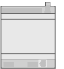
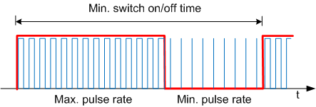

RXM21.1 properties
The listed properties are displayed in the Hardware and network editor > Inspector window > Properties tab when the device with KNX PL-Link is selected in the Device view tab.
RXM21.1 |
 |
General and Catalog information
The General and Catalog Information group provides information about the device.
Property | Description | Default value |
|---|---|---|
Mode | Mode shows the network mode of the device. Read only. | KNX PL-Link |
Name | Name is a text field to enter the name of the device. The name is used to identify the device in the device view. | Depends on other settings. |
Comment | Comment is a free text field to enter any helpful information on the device. | - |
Power consumption | Power consumption shows the power the device consumes. Read only. Unit: [mA] The value is used to calculate the remaining power of the KNX rail. See also power consumption and supply on KNX rail of PXC3 or KNX rail of DXR2. | Depends on the device type. |
Short designation | Short designation shows a short description of the device. Read only. | Depends on the device type. |
Order number | Order number shows the device type. Read only. | Depends on the device type. |
Version | Version shows an internal version of the device. Read only. | - |
Description | Description shows a short description of the device. Read only. | Depends on the device type. |
Device information
The Device information group provides information about the device and settings.
Property text | Description | Default value |
|---|---|---|
Device address (KNX) | Device address (KNX) shows the fixed standard address for devices with KNX PL-Link. Read only. | 255 |
Serial number used | Serial number used defines the method used for device identification.
|
|
Serial number | Serial number defines the serial number used for device identification. Serial number is only enabled and relevant if Serial number used is enabled. | 000000000000 |
 : The serial number entered in the text field Serial number is used for device identification.
: The serial number entered in the text field Serial number is used for device identification. : Device identification has to be done in Web interface. The device has to be in programming mode for Web interface to perform the device identification.
: Device identification has to be done in Web interface. The device has to be in programming mode for Web interface to perform the device identification.Alarming
Property | Description | Default value |
|---|---|---|
Alarming |
|
|
Functions
The functions table in the Channel Overview provides an overview of the channels of the device. Depending on the device the values in the table are read only or can be edited. The available types depend on the device and the application function.
Property | Description |
|---|---|
Name | Name of the channel. Read only. |
Type | Name of the function. |
Zone | Part of the geographical address of the device. Range: 1...126 |
Room | Part of the geographical address of the device. Range: 1...63 |
Subzone | Part of the geographical address of the device. Range: 1...15 Note |
Activate | Activate defines if the channel is activated.
|
The functions are described briefly in the table below.
Type | Description | Number of channels used |
|---|---|---|
Device | Device information that is mapped to the BACnet object peripheral device (PrphDev). Read only. | 1 |
GPTS | General purpose temperature sensor (GPTS) for room temperature Only LG-Ni 1000 sensors are permitted. | 1 |
GPDI | General purpose digital input (GPDI) for window switch or presence detector among other uses | 2 |
FSA | Fan speed actuator (FSA) for 1-, 2- or 3-stage fan actuator (3 relays) | 1 |
HVA | HVAC valve actuator (HVA) for 4 triac outputs for 2 motorized actuators or 2 thermal actuators. Note | 2 |
Some of the functions can be configured. The properties of those functions are described below in order of their appearance in the table.
General purpose temperature sensor (GPTS)
Property | Description | Default value |
|---|---|---|
Change of value, COV | Change of value, COV defines the change in the value for room temperature that triggers the sending of the value for room temperature. Range: | 0.1 |
 0.1...100 [K]
0.1...100 [K]Fan speed actuator (FSA)
Property | Description | Default value |
|---|---|---|
Number of stages | Number of stages defines the number of stages in a fan with staged speed control. Range: | 3 |
Boost time | The motors of some staged fans do not have a sufficiently powerful torque to set the fan in motion at the lowest speed. Therefore, multi-speed fans are started at the highest speed and then switched back to fan speed 1. Boost time defines the time the motor runs at the highest speed before it is switched back to fan speed 1. Range: | 20 |
Backup mode | Backup mode defines the behavior of the fan speed actuator if the timeout for receiving a Fan speed setpoint or a value for OnOffCtrlFan has passed.
|
|
Backup value | Backup value defines the value of the fan speed actuator if the timeout for receiving a Fan speed setpoint or a value for OnOffCtrlFan has passed. The value is only relevant if the property Backup mode is set to Backup value. Range: | 1 |
 Mode 0: The actuator is set to the value defined in Backup value.
Mode 0: The actuator is set to the value defined in Backup value.HVAC valve actuator (HVA)
Property | Description | Default value |
|---|---|---|
Neutral zone | Positioning Neutral Zone (0…100%) If the difference between the stroke model and the process value (DY) is more than half the deadband plus the hysteresis, this generates an OPEN or CLOSE pulse which is long enough to return the actuator to a position within the deadband. The minimum pulse length is equal to Rise time or Fall time, multiplied by the hysteresis. (See figure Hysteresis and Neutral zone below). This property is only meaningful if the property Signal type is set to 3-position. Range: | 0 |
Maximum pulse rate | Maximum pulse rate defines the pulse rate for a process value of 100 %. This property is only meaningful if the property Signal type is set to PWM constant period. Range: | 80 |
Start synchronization | Start synchronization defines the method for synchronization of the actuator’s stroke model at startup. Synchronization is automatically initiated at start up. This property is only meaningful if the property Signal type is set to 3-position.
|
|
Backup value | Backup value defines the actuator position if the timeout for receiving a setpoint for the actuator position has passed. The value is only relevant if the property Backup mode is set to Mode 0. Range: | 0 |
Backup mode | Backup mode defines the behavior of the HVAC valve actuator if the timeout for receiving a setpoint for the actuator position has passed.
|
|
Signal type | Signal type defines the type of valve that is controlled by the actuator:
|
|
Rise time from 0 to 100% | Rise time from 0 to 100% defines the time needed for the valve to travel from 0 [%] to 100 [%]. This property is only meaningful if the property Signal type is set to 3-position. Range: | 150 |
Fall time from 100 to 0 % | Fall time from 100 to 0% defines the time needed for the valve to travel from 100 [%] to 0 [%]. This property is only meaningful if the property Signal type is set to 3-position. Range: | 150 |
Polarity inverse | Polarity inverse logic defines if the connected physical output is handled as normally open or normally closed.
|
|
Reaction time | Reaction time defines the additional runtime when traveling to 0 % or from 0 %. The reaction time compensates for the clearance between motor and drive. Note: This property is only meaningful if the property Signal type is set to 3-position. Range: | 0 |
Minimum period | Minimum period defines the length of the superordinate period for thermal actuators. This property is only meaningful if the property Signal type is set to PWM variable period. Example for a process value of 60 % and a Minimum period of 400 [s].  Range: | 400 |
Minimum pulse rate | Minimum pulse rate defines the pulse rate for a process value of 0 %. Pulse rate to preheat a thermal actuator. This property is only meaningful if the property Signal type is set to PWM variable period. Range: | 0 |
Pulse period | Pulse period defines the length of a switching cycle. This property is only meaningful if the property Signal type is set to PWM constant period. Range: | 1800 |
Hysteresis | Hysteresis in the stroke model This property is only meaningful if the property Signal type is set to 3-position. Range: | 0 |